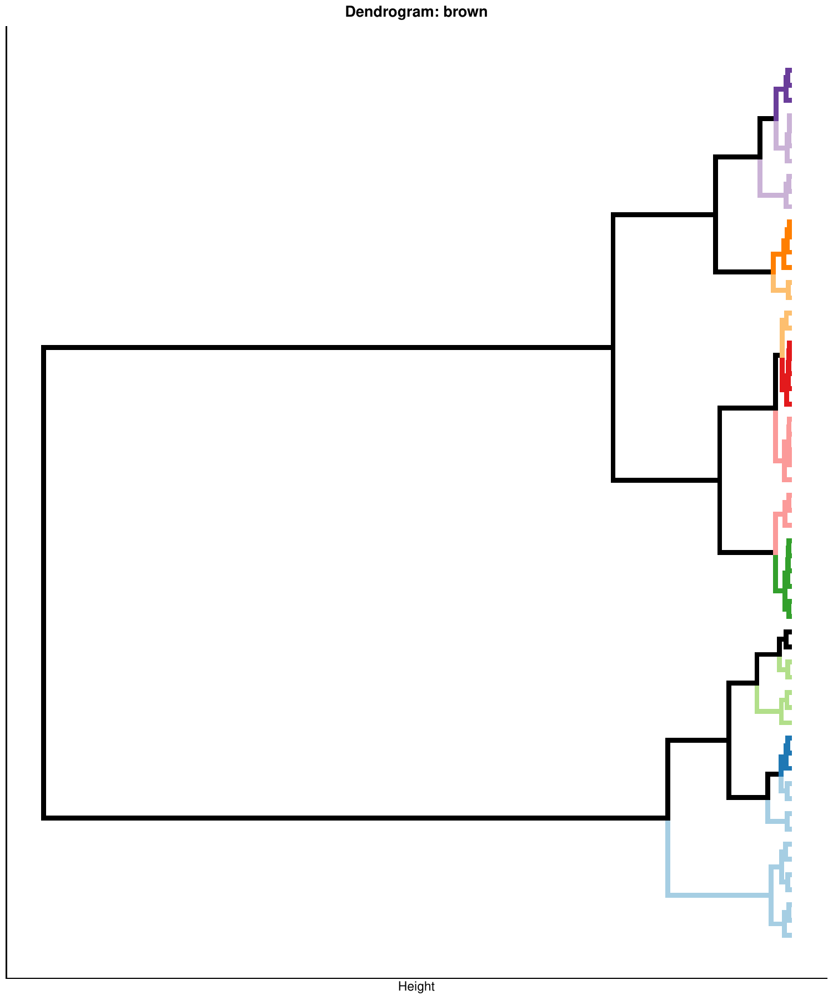
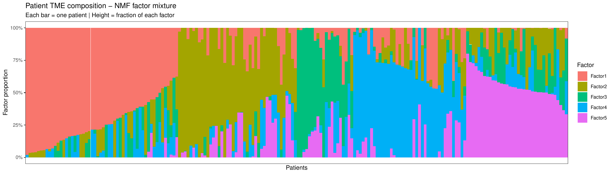
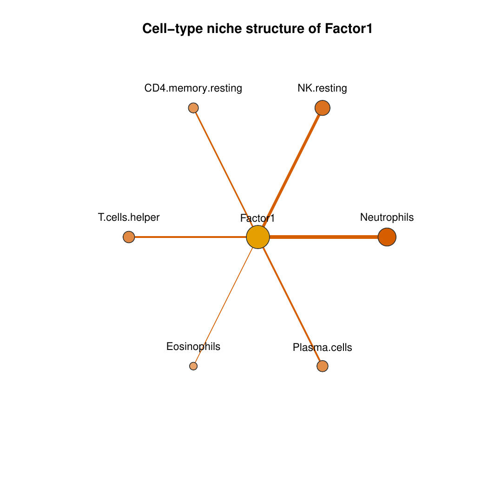

Cell groups and latent factors
a2_cell_groups.Rmd
library(CellTFusion)
#> This tutorial covers the core steps of CellTFusion:
building cell groups from TF modules and deconvolution features,
extracting latent factors and characterizing cell niches. It uses two
objects from the Feature
computation tutorial:
-
network— TF co-activity modules fromcompute.WTCNA(). -
dt— deconvolution subgroups frommultideconv::compute.deconvolution.analysis().
Cell groups
construct_cell_groups() correlates each TF module with
the deconvolution features, clusters the significantly correlated
features of each module, and cuts the dendrograms into cell
groups. Each cell group gets a composite score per sample: the
first canonical component of a canonical correlation analysis (CCA)
between the group’s deconvolution features and the TFs of its module.
Groups whose association with the module does not pass a permutation
test are discarded.
Key arguments:
-
network,dt— the inputs above. -
batch— optional cohort vector (see Multi-cohort analysis). -
pval— p-value threshold for the module-feature correlations and for the permutation test. -
n_perm— number of permutations of the test (default 999). -
dendrogram_file/return_dendrogram— withreturn_dendrogram = TRUE, the colored dendrograms are saved toResults/Dendrogram_color_clusters_<dendrogram_file>.pdf.
cell_groups <- construct_cell_groups(
network = network,
dt = dt,
pval = 0.05,
clustering.method = "ward.D2",
n_perm = 999,
dendrogram_file = "Tutorial",
return_dendrogram = TRUE
)One dendrogram is drawn per TF module, showing how its correlated deconvolution features cluster into cell groups:

construct_cell_groups() returns a named list:
| Element | Description |
|---|---|
Cell_groups |
Data frame of composite scores (samples x cell groups) |
Composition |
Deconvolution features in each cell group |
Weights |
CCA projection parameters of each group (xcoef,
train_means, train_sds), used to score new
samples |
Re-running with precomputed features
CellTFusion() accepts precomputed dt,
tfs and pathways, for example from a previous
run (res$Processed_deconvolution,
res$TFs_matrix, res$Pathways_scores). The
corresponding steps are then skipped, which is useful to try different
module or cell group parameters without recomputing the features:
res_rerun <- CellTFusion(
raw.counts = raw.counts,
normalized = TRUE,
dt = res$Processed_deconvolution,
tfs = res$TFs_matrix,
pathways = res$Pathways_scores,
corr_mod = 0.25,
minMod = 20,
pval = 0.05,
return = TRUE
)Latent factors
compute.latent_factors() decomposes the cell group
scores into non-negative latent factors with NMF. Each score is first
split into a positive and a negative part (_pos and
_neg columns), so that both directions of association can
contribute to the factors. If rank = NULL, the number of
factors is chosen at the elbow of the reconstruction error across ranks
2 to 8.
latent_spaces <- compute.latent_factors(
X = cell_groups$Cell_groups,
rank = NULL,
seed = 123,
file_name = "Tutorial",
return = TRUE
)
head(latent_spaces$Z) # samples x factorsThe result contains Z (factor scores, samples x factors
— the input for statistics and machine learning), W
(weights of each cell group part in each factor),
nmf_input, the NMF model and the per-sample factor
proportions. With return = TRUE, the mixture of factors in
each sample is plotted:

Cell niches
compute_cells_niches() characterizes each latent factor
by the cell types enriched among the cell groups that contribute most to
it: the top-weighted cell groups are selected
(quantile_cutoff) and cell types more frequent in them than
in all cell groups (enrich_thresh) are kept.
cells_niches <- compute_cells_niches(
latent_factors = latent_spaces,
dt = dt,
cell.groups = cell_groups,
enrich_thresh = 1.5,
quantile_cutoff = 0.7,
return = TRUE,
file_name = "Tutorial"
)For each factor, a star network of its enriched cell types is saved (edge width reflects the weight of the cell type in the factor):

Next steps
With the latent factors you can:
- characterize TME states with Hallmark GSEA and meta-programs — TME state characterization;
- test associations with clinical variables — Statistical analysis;
- use them as features for prediction — Machine learning workflows.